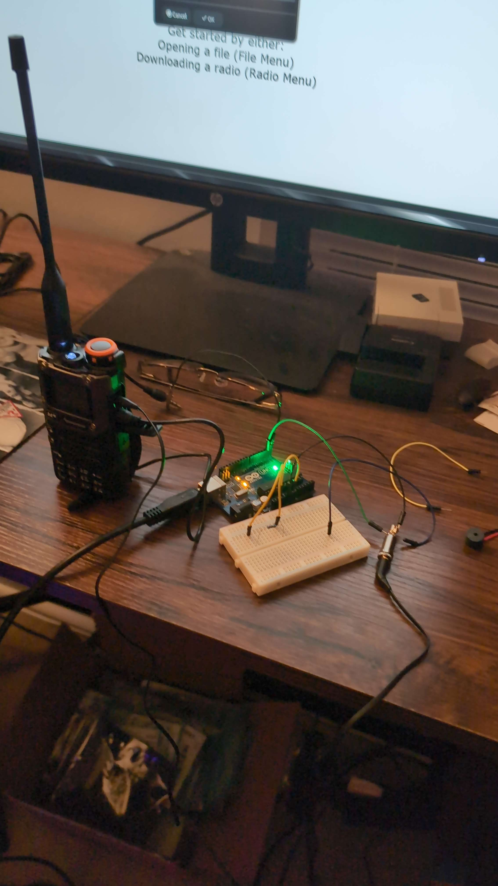
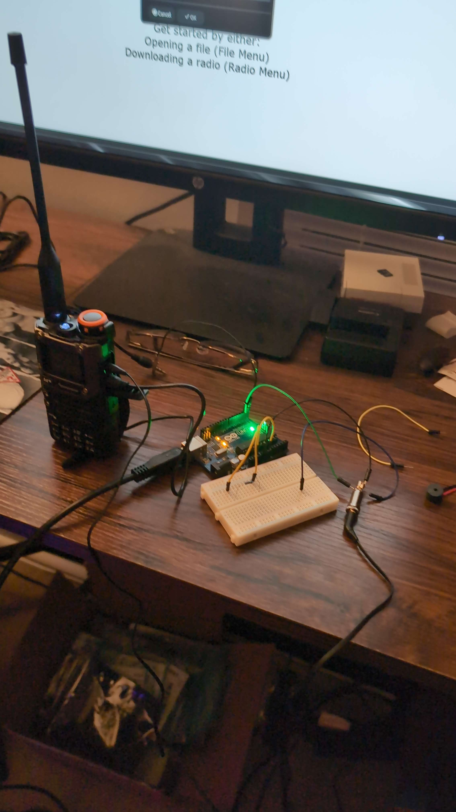

I've recently gotten into amateur radio. It's really fascinating the signals you can pick up with some simple gear. The first radio I got was a Quansheng UV-K5, which is a chinese radio that's only okay, but it's much cheaper than other handhelds and works reasonably well. It's especially nice when combined with a custom firmware. The radio is fairly popular so there are many firmwares. I personally like EGZumer. It has a lot of extra features, and fixes some bugs in the original firmware. It adds HF frequencies all the way down to 18 MHz for receiving. Below is a picture of the radio and the programming circuit. It hijacks the Arduino's usb to serial chip to program the radio instead. Some of the interesting things I've used it for include:
- APRS (text messages through the radio)
- Communicating through the international space station
- APRS through the ISS
- Receiving images from weather satellites
- Air Traffic Control and plane signals
 

To go with the radio, I bought a signal stick, which is a super cool antenna that's basically indestructable. It's made by some people in the US, and they use the proceeds to run a practice website for the ham license test, which is pretty cool. After that, I decided I wanted to go bigger, so I put up a 16 foot dipole in the attic. It uses speaker wire and generic coax from the flea market, so it was super cheap to make. Unfortunately, it's just too big to use with the Quansheng. It picks up too much noise and the Quansheng doesn't have great filtering, so it's hard to hear anything but the strongest signals.


To make full use of the antenna, I got an RTL-SDR, which is an inexpensive software defined radio. It has significantly better filtering, and is able to receive a wider range of frequencies. This is where things got particularly interesting. Having a receiver that can pick up HF frequencies opens up a lot of interesting things to listen to. Thus far, I've mostly experimented with FT-8, which is a weak signals communication mode that allows data to be sent incredibly long distances at modest power outputs. Using FT-8, I regularly hear signals as far away as South America and Europe. I use WSJT-X and GridTracker to decode and display the signals. GridTracker is super cool, as it displays the current signals you're receiving on a map.
I'm also currently in the process of building a truSDX, which is a super small, purpose-built HF transceiver kit. It's designed by DL2MAN and PE1NNZ in Germany. So far the build has been very enjoyable and I'll upload pics of that when it's finished